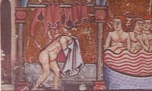
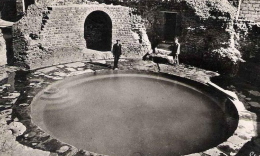
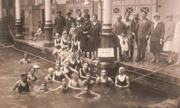

Notre histoire
Depuis des siècles, notre entreprise est une valeur sure en terme d'installation de piscines de tous types. Cette enluminure du XXIIème siècle montre le créateur de l'entreprise, Godfroi de Piscinus, entrain de se sécher les cheveux après un petit plongeon dans l'une de ses réalisations. Cette piscine, spécialement crée pour le Duc de Normandie, est encore visible actuellement au château de Noirmoutier. C'est d'ailleurs encore aujourd'hui un cas d'école dans le domaine de la construction de piscines.
C'est à la fin du XIXème siècle qu'un évènement majeur dans l'histoire de la piscine vient ébranler la planète. Des fouilles archéologiques effectuées en Asie Mineure mettent à jour une piscine circulaire, d'une dizaine de mètres de diamètre. Le travail minutieux des archéologues révèle, au fond du bassin, trois lettres: les initiales LGP. Vous l'aurez compris, il s'agit des initiales "Le Grand Plongeon"! La stupeur est totale. Les touristes du monde entier se pressent dans cette région désertique pour venir admirer la première réalisation de notre entreprise, qui, selon les datations, pourrait remonter à plusieurs millénaires avant JC.
C'est vers le milieu du XXème siècle que l'entreprise le grand plongeon connaît son heure de gloire. Dès 1939, l'héritier "Grand plongeon and Co" voit sa fortune croître de façon exponentielle. L'entreprise décroche des contrats dans les villes les plus prestigieuses de la planète: Berlin, Munich, francfort.. Grâce à une nouvelle méthode de travail, l'héritier Von Barr Grandplongeon fournit un emploi à des centaines de milliers de personnes à travers l'Europe. Malheureusement, l'entreprise connaît une période sombre dès 1945. Le manque de main d'oeuvre et des bénéfices en chute libre poussent Von Barr Grandplongeon à se tourner vers un nouveau marché. Il quittera l'Europe pour s'installer en Amérique du Sud, où il restructurera l'entreprise pour lui redonner le succès que nous lui connaissons aujourd'hui.